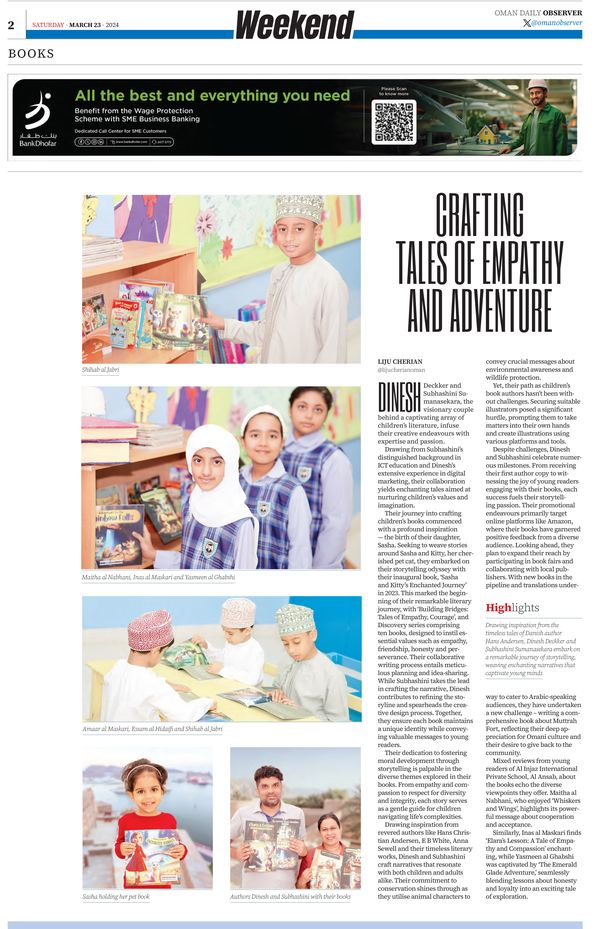
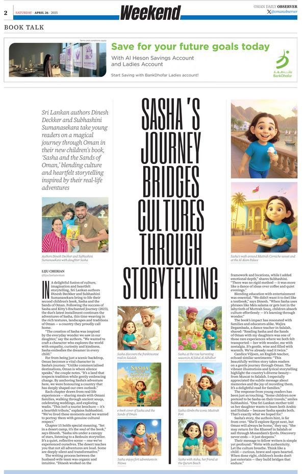

Biographical information, press assets, media coverage, and speaking topics for journalists, publishers, event organisers, and academic partners.
Official Biography
Press Biographies
Short Bio (50 words)
Dinesh Deckker is a bestselling KDP author of 300+ books, PhD candidate in Marketing, and digital marketing strategist with over 20 years of experience. Sri Lankan-born and based in Muscat, Oman, he is best known for the Bible Adventure Series — 80+ children's Bible picture books co-authored with Subhashini Sumanasekara.
Full Bio (150 words)
Dinesh Deckker is a bestselling KDP author, researcher, and digital marketing strategist with over twenty years of professional experience. Born in Sri Lanka and based in Muscat, Sultanate of Oman, his work spans children's literature, biblical fiction, academic research, and digital platform development.
As a publisher on Amazon KDP, Dinesh has built a catalog of more than 300 titles, placing him in the top 3–5% of KDP authors globally by organic royalties. His most recognised work is the Bible Adventure Series — 80+ children's Bible picture books co-authored with Subhashini Sumanasekara — with multiple titles ranking in Amazon's top 100 for Children's Picture Bibles.
Alongside publishing, Dinesh pursues doctoral research in Marketing at Wrexham University, co-authoring peer-reviewed work on artificial intelligence, digital culture, and corpus linguistics. Much of his children’s catalogue is co-authored with his wife, Subhashini Sumanasekara.
Media Coverage
In the Press
Dinesh Deckker and Subhashini Sumanasekara have been featured multiple times in Oman's national newspaper, the Oman Daily Observer — spanning Dinesh's early photography career through to their children's books and poetry. Click any clipping to read the full feature.

Oman Daily Observer · 23 Mar 2024
Crafting Tales of Empathy and Adventure
A Weekend Books feature on Dinesh and Subhashini's journey into children's literature, the Building Bridges series, and writing values-driven stories for young readers.

Oman Daily Observer · 26 Apr 2025
Sasha's Journey Bridges Cultures Through Storytelling
A Book Talk feature on Sasha and the Sands of Oman, exploring how the couple wove Omani culture and landscapes into a heartfelt children's story.
Oman Daily Observer · 10 Dec 2025
Whispers of the Desert
A Features cover story on A Poetic Journey Through Oman's Nature: Landscapes in Verse, Dinesh's poetry collection celebrating Oman's mountains, wadis and wildlife.
Oman Daily Observer · Oct 2016
Picturesque Oman: A Photographer's Passion
A Weekend Special multi-page feature on Dinesh's landscape and wildlife photography, his "Picturesque" exhibition, and his conservation work as President of the Nade Gura Travel & Conservation Society.
Oman Daily Observer · 8 Apr 2017
Not Just a String of Stills
An Observer Weekend Photography feature on Beauty of Oman, Dinesh's short film built from 48 photographs using Photo Motion technology, inspired by his wife Subhashini.
Goodreads
Goodreads — Ongoing
373 Books Listed · 943 Ratings · 4.17 Average
Dinesh Deckker's most popular title on Goodreads is Silent Night: A Christmas Horror. Over 468 ratings with 35 reviews across the catalog.
Multiple Titles Ranked: Children's Picture Bibles Top 100
Multiple titles from the Bible Adventure Series have ranked in Amazon's Top 100 for Children's Picture Bibles — driven entirely by organic discovery and SEO without paid advertising.
Self-Publishing at Scale: Building a 300-Book KDP Catalog
The strategy, systems, and mindset behind publishing 300+ books organically on Amazon KDP — from cover design to keyword research to royalty optimisation.
AI, Bias, and Cultural Representation in Generative Imagery
Academic talk drawing on peer-reviewed research into how AI image generation systems encode and amplify cultural biases — with a focus on South Asian representation.
Faith, Fiction, and the Art of Biblical Storytelling
How to write theologically grounded fiction that respects the text while bringing it to life — drawing on experience writing the Bible Adventure Series and The Temptation.
Co-Authoring at Scale: Building a Children’s Book Catalogue Together
How a husband-and-wife writing partnership produces a large, cohesive catalogue of children’s books — dividing roles across writing, illustration direction, and education.
The Aramaic Dimension: Mary Magdalene and Early Christian Texts
Academic seminar drawing on graduate-level research into early Christian scholarship, the word "Rabboni," and what textual analysis reveals about women in the resurrection narrative.
Where to Find the Books
Available at These Retailers
Beyond Amazon, Dinesh Deckker’s books are listed across major international bookstores and catalogues. Below is one representative link per retailer — some point to author pages, others to individual titles.